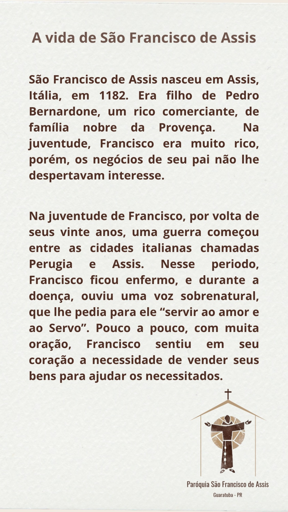

"Senhor, fazei de mim um instrumento de vossa paz."
Programe-se para celebrar conosco e receber os Sacramentos.
Atendimentos de Confissão e Direção Espiritual
Por favor, agende seu horário diretamente com a nossa Secretaria Paroquial.
Falar com a SecretariaAlimente sua alma com a liturgia diária e o Evangelho do dia.
"A palavra de Deus é viva, eficaz, mais penetrante do que uma espada de dois gumes..."
Hebreus 4, 12
"Cada um dê conforme determinou em seu coração, não com pesar ou por obrigação, pois Deus ama quem dá com alegria." (2 Coríntios 9,7)
Sua generosidade ajuda a manter as obras de evangelização, a manutenção da nossa igreja e as ações sociais da paróquia. Para a sua comodidade, você pode contribuir diretamente pelo seu aplicativo bancário usando a opção "PIX Copia e Cola" ou lendo o QR Code.
Chave PIX (CNPJ): 75.180.760/0024-13
Favorecido: MITRA DIOCESANA DE PARANAGUA
Escaneie o QR Code com o aplicativo do seu banco
